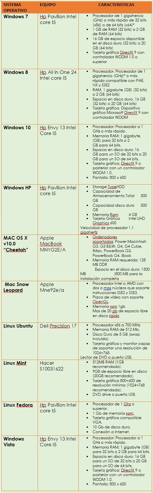

ANALIZAR LOS DIFERENTES SISTEMAS OPERATIVOS E INSTALACIÓN DE SOFTWARE SEGÚN LOS REQUERIMIENTOS
Los tres sistemas operativos más comunes son Microsoft Windows, Apple Mac OS X y Linux y, vienen instalados en el ordenador antes de que tú lo compres. La mayoría de los usuarios emplean el S.O. que viene de serie con el ordenador, aunque se puede sustituir o cambiar, en el caso de que quieras otro. Lo bueno de estos S.O. es la interfaz gráfica de usuario, con la que vienen programados. La interfaz gráfica de usuario es la que permite que todo se muestre de forma clara en la pantalla y que puedas interactuar con los diferentes menús e íconos con un simple click. 1.- Windows Vamos a ver una lista de las diferentes versiones de Windows que Microsoft lanzó: El sistema operativo más popular del mundo en mitad de la década de 1980. Disk Operating System (D.O.S.): Disk Operating System o D.O.S. por sus siglas en inglés, fue el primer sistema operativo que desarrolló Microsoft. A finales de los 80 consiguió una gran popularidad y prácticamente todos los pc se fabricaban con el objetivo de funcionar en este sistema operativo. mouse. De hecho, el ratón agilizó mucho el proceso de interacción del usuario con el pc. Windows 95: Fue lanzado el 24 de agosto de 1995 y supuso un nuevo impulso para Microsoft por su buena acogida en el mercado. Tuvo una buena acogida porque fue lanzado en la época en la que los PC comenzaron a estar en auge y porque supuso una gran mejora en comparación con el Windows 3.1, en especial la interfaz gráfica de usuario, mucho más moderna y amena. De hecho, este Windows fue el primero en incluir la barra de tareas o el botón de inicio. Además también se realizó por parte de Microsoft una buena (y muy cara) campaña de marketing y publicidad. Si quieres conocer más sobre la historia de Windows 95 puedes hacerlo aquí. Microsoft fue mejorando su Sistema Operativo, las siguientes versiones de Windows hasta la actualidad son: • Windows 98 • Windows Me • Windows XP • Windows Vista • Windows 7 • Windows 8 • Windows 10 También hay una versión de este S.O. conocida como Windows New Technology que se orientaba más a zonas de trabajo. Contaba con dos versiones, la conocida como Workstation (para ser empleada en zonas de trabajo) y la versión Server (empleada para montarse en servidores de red).
2.- MAC OS Son los sistemas operativos creados por la compañía Apple y que son exclusivos de su línea de productos, no distribuyéndose a terceros. Al igual que Windows, MAC OS también ha sido actualizando con el paso de los años, con versiones como, por ejemplo, las siguientes: • MAC OS X v10.0 “Cheetah” • Snow Leopard • Lion • Yosemite Resulta curioso como Apple llamó a las versiones de sus S.O. como algunos felinos, no obstante, esto cambió a partir de la versión 10.9, conocida coloquialmente como Mavericks, donde Apple cambió el rumbo y comenzó a llamar a sus S.O. como zonas de California. 3.- Linux Linux es un sistema operativo de código abierto, esto quiere decir que cualquier persona tiene licencia para modificarlo o distribuirlo sin ningún tipo de problema. A diferencia de los dos S.O. anteriormente mencionados, (MAC Y WINDOWS) Linux es gratuito y al ser modificable por particulares, existen muchas versiones diferentes. Las versiones más populares de Linux son: • Ubuntu • Mint • Fedora Se conoce como Linux en honor a quien lo ideó, Linus Torvalds, que fue la persona que creó el núcleo de este S.O. en 1991.
Otros sistemas operativos Estos son los sistemas operativos más populares, no obstante, existen otros (o, por lo menos existieron) de los que no nos queremos olvidar: OS/2 Fue el intento de IBM de competir contra Microsoft y su primer sistema operativo (D.O.S.), sin embargo, tuvo una mala acogida en el mercado, dado que no tuvieron el apoyo de los creadores de software, puesto que todos los desarrolladores se volcaron en la creación de programas para Windows. Unix Unix fue creado por la compañía AT&T y se trata de un sistema operativo tanto multitarea como multiusuario. Como curiosidad, el sistema operativo de Apple (MAC OS) se basa en el S.O. de Unix.

FRECUENCIA PARA DATOS NO AGRUPADOS
Es el conjunto de datos obtenidos en la recopilación y una vez que se han recopilado los datos, el siguiente paso es organizarlos.
TABLA DE FRECUENCIAS Lo datos obtenidos durante la recopilación se organiza en una tabla llamada “Tabla de frecuencias o distribución de frecuencias simple”.
FRECUENCIA En una preparatoria se les hizo una encuesta a 23 profesores, preguntándoles cual es el sistema operativo que utilizan con más frecuencia y estos fueron los resultados.